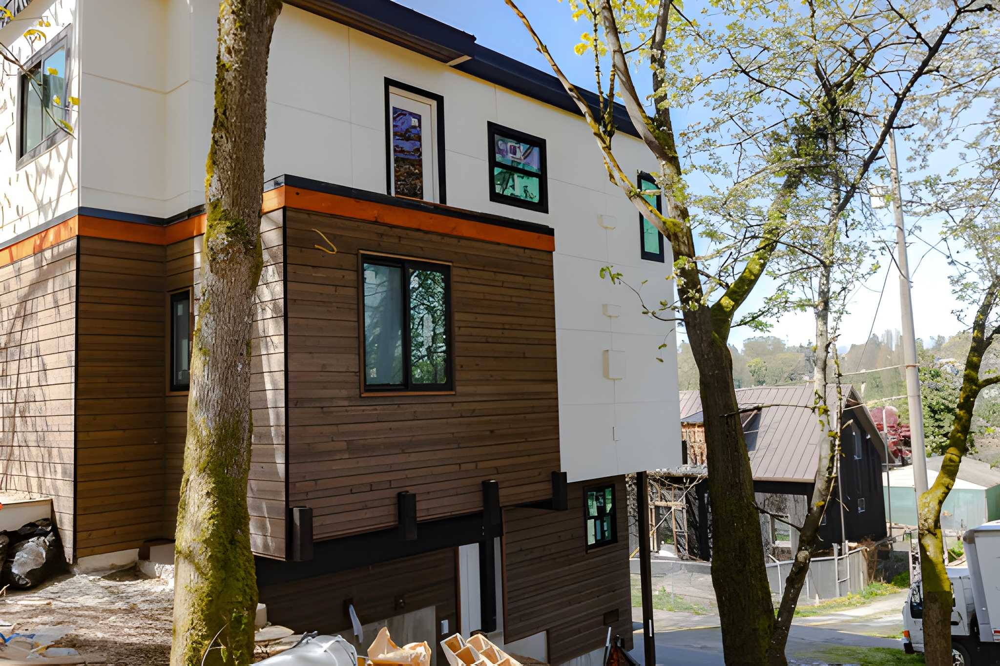

Built for Pierce County weather
A new exterior should help the home handle wet seasons, wind, and daily wear. We focus on the full wall assembly so the siding project does more than improve appearance.
Practical material guidance
Fiber cement, vinyl, cedar, and engineered options all have a place. The right recommendation depends on the home style, budget, and how much maintenance the homeowner wants later.
Breeze Siding serves Puyallup, Tacoma, Spanaway, Lakewood, Bonney Lake, and nearby Pierce County communities.